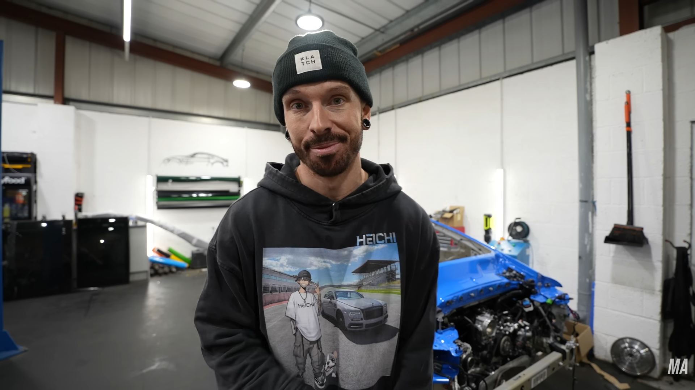
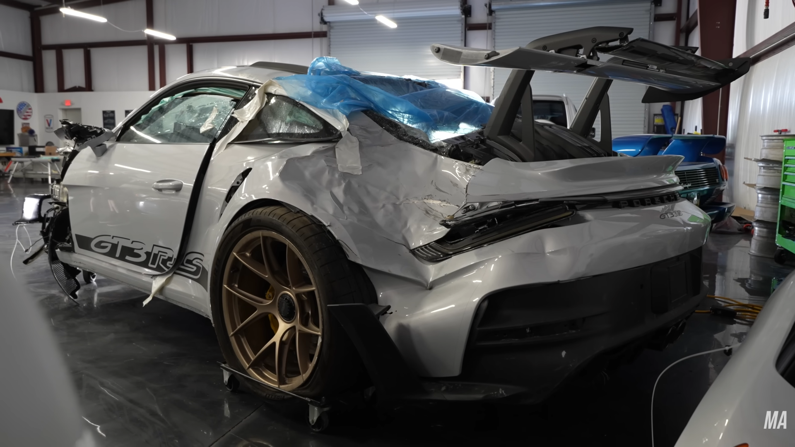
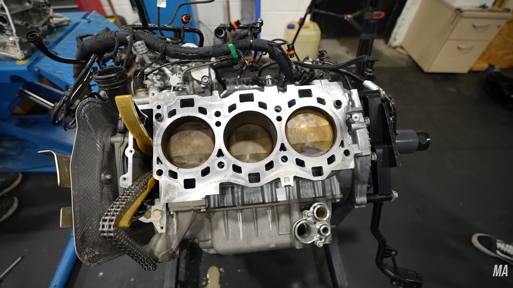
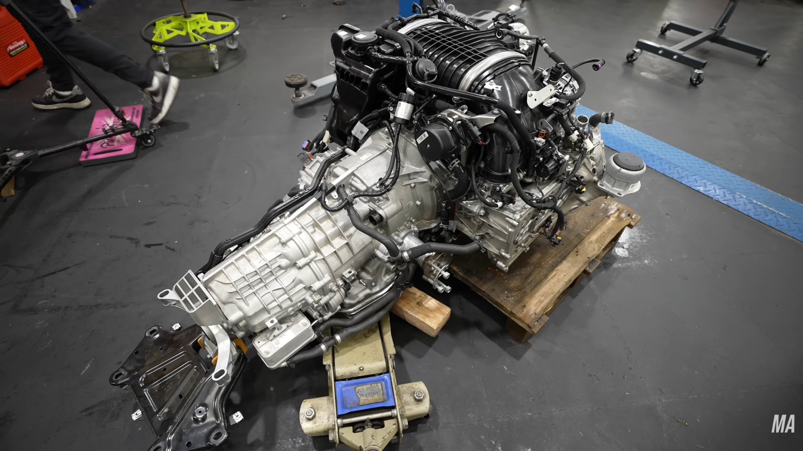
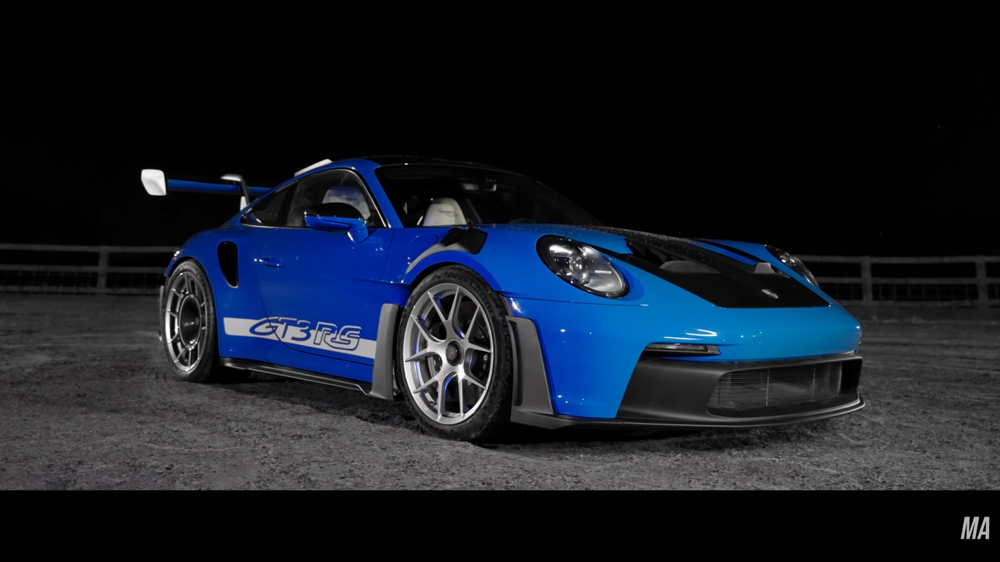

Case Study
This section documents a case-study I've done on a rebuild video of a Porsche. The refrence is from a youtube channel called Matt Armstrong, he does rebuild videos and keeps the video entertaining while providing technical information and procedure on how he rebuilds the cars.


Vehicle Overview
Problem Analysis
This car has been in an accident, was submerged in water so high chances of rust in components like the engine. Water has gone into alot of vital parts like the engine etc.


Diagnosis Process
So they decided to first clean the rust in the cylinders, since every millimeter in the cylinder matters, the piston is put such that it fits perfectly in the cylinder. However, the rust had already damaged the cylinder, so they had to order a new cylinder.
Engineering Observations
This Porsche is a track car, and is designed for parts to be easily accessible. However, they placede the power fuse box right under the dash board, making it hard to access.

What I Learned
This case study has massively improved my understanding on the internal components of the car. Especially because they had to strip apart the whole car, I was able to see everything inside and understand how it worked. Including the engine.